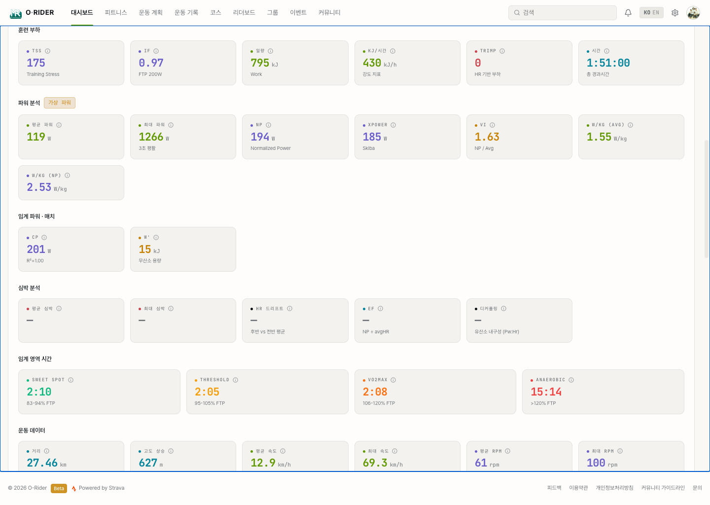

3. 활동 상세 분석
이 섹션의 목적
개별 라이딩의 상세 데이터를 읽고, "이 라이딩에서 무엇이 잘 되었고 무엇이 부족했는지"를 판단하는 것.

3.1 경로 지도 — "어디를 어떻게 달렸는가"
확인할 것
활동 상세 상단의 경로 지도에서 실제 이동 경로를 확인합니다.
- 출발/도착 마커 — 라이딩의 시작점과 끝점
- 경로 폴리라인 — 실제 이동 경로 (주황색 선)
- 세그먼트 하이라이트 — 등록된 세그먼트와 겹치는 구간 강조
해석 기준
- 경로가 깔끔하게 이어지면 GPS 정확도가 양호했던 것
- 경로가 지그재그로 튀는 구간이 있으면 GPS 오차가 있었음 (터널, 고층 빌딩 등)
결과
코스를 시각적으로 되짚어 보며, 다음에 같은 코스를 탈 때 구간별 전략을 세울 수 있습니다.
3.2 고도 프로필 — "코스의 난이도를 한눈에"
확인할 것
거리(X축) 대비 고도(Y축)의 변화를 그래프로 봅니다.
해석 기준
| 패턴 | 의미 |
|---|---|
| 완만한 곡선 | 평지 중심의 라이딩 — 속도 훈련에 적합 |
| 급격한 상승 구간 | 가파른 오르막 — 클라이밍 능력이 요구됨 |
| 반복적인 오르내림 | 롤링 코스 — 페이스 조절 능력이 중요 |
| 후반부에 상승 집중 | 후반부 체력 관리가 핵심인 코스 |
결과
코스 특성을 이해하면 다음 라이딩에서 체력 배분을 개선할 수 있습니다.
3.3 핵심 지표 읽기 — "숫자 뒤의 의미"
확인할 것
분석 탭의 핵심 지표를 단순히 읽는 것이 아니라 해석합니다.
| 지표 | 단순 수치 | 해석 |
|---|---|---|
| 평균 속도 | 25.3 km/h | 전체 페이스를 일정하게 유지했는가? 지난 동일 코스와 비교하여 향상되었는가? |
| 이동 시간 vs 경과 시간 | 2h10m / 2h45m | 정지 시간이 35분 — 신호 대기가 많았거나 휴식이 길었음 |
| 획득 고도 | 850m | 같은 거리(80km)라도 고도 850m면 상당한 난이도. 평지 80km와는 전혀 다른 라이딩 |
| 칼로리 | 1,200 kcal | 에너지 소비량 — 보급 계획 수립에 참고 (시간당 300~400kcal이 일반적) |
3.4 심박 데이터 — "얼마나 힘들었는가"
확인할 것
심박 센서로 기록된 데이터가 있으면 분석 탭에 심박 정보가 표시됩니다.
해석 기준
| 지표 | 해석 |
|---|---|
| 평균 심박수 | 전체 운동 강도 — 최대 심박의 60~70%면 편안한 라이딩, 80% 이상이면 고강도 |
| 최대 심박수 | 가장 힘들었던 순간의 강도 — 오르막 정상이나 스프린트 구간 |
| 심박 존 분포 | 존 1~2 중심이면 회복/지구력 라이딩, 존 4~5가 많으면 고강도 훈련 |
결과
"힘들었다"는 느낌을 숫자로 검증하고, 다음 라이딩의 강도를 조절할 근거를 얻습니다.
3.5 파워 데이터 — "실제로 얼마나 밟았는가"
확인할 것
파워미터로 기록된 활동, 또는 가상 파워(속도·경사·체중 기반 추정)가 계산된 활동에서 표시됩니다.
해석 기준
| 지표 | 해석 |
|---|---|
| 평균 파워 | 전체 출력 — 바람이나 경사에 영향 받지 않는 객관적 강도 지표 |
| NP (정규화 파워) | 변동을 고려한 실제 신체 부하 — 평균 파워보다 높으면 강도 변동이 큰 라이딩 |
| IF (강도 계수) | FTP 대비 강도 — 0.7 이하면 회복, 0.75~0.85면 지구력, 0.85 이상이면 레이스급 |
| TSS (훈련 스트레스) | 이 라이딩이 몸에 준 총 부하 — 150 이하면 가벼움, 300 이상이면 상당한 피로 |
결과
속도나 심박과 달리 외부 조건에 영향 받지 않는 객관적 지표로, 훈련 효과를 정확히 판단할 수 있습니다.
3.6 랩 분석 — "구간별 페이스 비교"
확인할 것
랩이 기록된 활동에서 구간별 거리, 시간, 속도를 테이블로 비교합니다.
해석 기준
- 앞쪽 랩이 빠르고 뒤쪽이 느리면 — 오버페이스로 시작하여 후반에 체력이 떨어진 것
- 랩 시간이 고르면 — 페이스 조절이 잘 된 라이딩
- 특정 랩만 유독 느리면 — 해당 구간의 특성(오르막, 역풍 등) 확인 필요
결과
구간별 페이스 패턴을 파악하여 다음 라이딩에서 체력 배분을 개선할 수 있습니다.
3.7 활동 관리
해야 할 것
본인 활동에서 다음 관리 작업이 가능합니다:
- 공개 설정 변경 — 공개/친구만/비공개 전환
- 설명 수정 — 활동에 메모 추가
- 내보내기 — FIT, TCX, GPX, CSV 형식으로 다운로드 (내보내기 탭, GPX는 GPS 기록이 있는 활동만)
- 삭제 — 활동 영구 삭제 (복구 불가)
3.8 좋아요와 댓글 — "동료와 소통"
해야 할 것
다른 라이더의 활동에 좋아요(Kudos)를 보내거나 댓글을 남겨 응원합니다. 받은 좋아요와 댓글은 활동 하단에 표시됩니다.
결과
소셜 상호작용이 라이딩 동기 부여에 도움이 됩니다.
3.9 활동 정보 편집과 삭제
등록된 활동의 설명을 다듬거나 공개 범위를 바꾸고, 잘못 올린 활동을 삭제합니다. 본인이 등록한 활동만 편집할 수 있습니다(다른 사람의 활동은 편집 불가).
| 항목 | 설명 |
|---|---|
| 설명 | 활동에 대한 메모·코멘트 |
| 장비 | 자전거 / 신발 등 종목에 맞는 장비명 |
| 시작 일시 | 날짜·시각 수동 보정 |
| 운동 유형 | 지구력 · 템포 · 인터벌 · 회복 · 레이스 · 출퇴근 |
| 공개 범위 | 전체 공개 · 팔로워 · 비공개 |
| 레이스 여부 · RPE | 레이스 표시, 체감 강도(1~10) |
| 데이터 숨기기 | 심박수 / 파워 수치를 다른 사람에게 숨김 |
결과
저장하면 변경 내용이 반영되고 활동 상세로 돌아갑니다. 공개 범위·데이터 숨기기 설정은 피드와 다른 사용자에게 보이는 내용에 바로 적용됩니다.